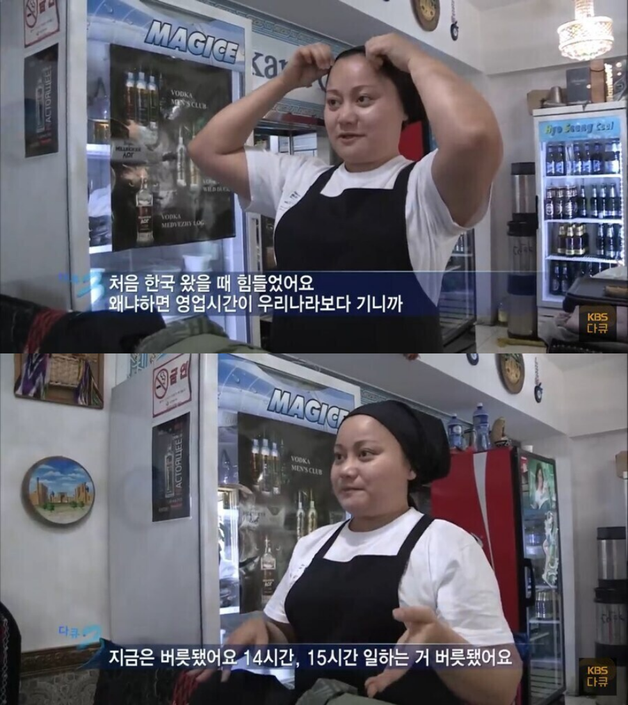

https://bbs.ruliweb.com/best/board/300143/read/77465346

우즈벡보다 노동시간이 길어서 힘들었는데 이젠 적응했다고 한다
(고려인 혼혈)
https://bbs.ruliweb.com/best/board/300143/read/77465346

우즈벡보다 노동시간이 길어서 힘들었는데 이젠 적응했다고 한다
(고려인 혼혈)
존맛탱
사마르칸트시티 아시는구나 여기 존나마싯슴미다
갓 구워진 삼싸 쫙 뜯어서 호불호먹고 뽀드카 한잔 조지면 여기가 바로 붉은광장입니다
오 가보고 싶다
보르쉬 - 보라색수프 소고기뭇국 맛 비슷함 추천
노동시간이 제일 큰 벽이었구나 ㅋㅋ
동대문에 식당인거같은데
요식업은 특히 사장님은 쉬는게 거의없지 ㅋㅋ
요식업이 얄짤없긴 해
저긴 빵도 구워서 근무시간 엄청 길듯
좀 오래된 이야기지만 옛날에 카자흐 갔을 때 존나 당황했던 게 다섯시인데 다 문 닫아 버리더라고...
나도 예전에 알마티 갔었는데 현지인이 데려간 밥집 12시까지 하던데
들어가서 자고 싶은데 계속 수다떨고 디저트까지 시켜먹어서 졸려 뒤지는 줄..
우즈벡 동생놈들한테 끌려가서 저기서 양고기 갈비탕? 한 입맛본 이후로 양고기는 처다보도 않게됨. 그리고 소고기 만두에 요거트 부은거 ㅈㄴ 별로야
우즈벡은 식당도 8시간만 일하나
우리나라가 이상한거야!!!
동대문 우즈벡 식당 가니까 술 안팔던데 저긴 파네
적응을 너무 하신거 같은데 ㅋㅋㅋㅋ
ddp는 사슐릭을 돼지고기로 만들어주는 곳 찾기가 어려움
수원이나 안산엔 많은데
행복하고 건강하세요
.... 14..15..? 돈 제대로 받아야할탠데 ㄷㄷ
동대문 사마르칸트구만 ㅋㅋㅋ